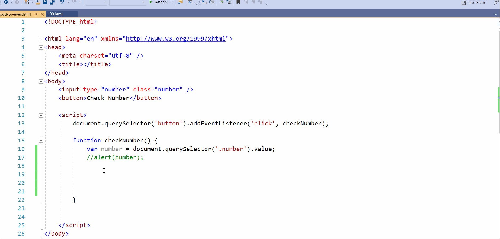

JavaScript Program for Finding Out Whether a Number is Odd or Even
Let's create a simple JavaScript program for finding out whether the user-entered number is odd or even.

Creating the HTML Elements
You'll need an input field and a button to make the JS program interactive.
- The input field should be set to receive only numbers. This can be done by setting the type attribute of the input field to number as shown in the image.
- The input field should also contain the class selector for selecting the user-entered input. Name the class selector as number.
- Set the text for your button element as Check Number.

- Save the HTML file and open it in a browser. The input box and button you just created appear on the page as shown below.

Note: At this point, these are just HTML elements without any logic written into them needed to find out whether a given number is even or odd.
Writing the JavaScript Program
Ensure the javascript you write is enclosed between script tags.
Adding an Event Listener to the button
We should get the user entered number when they click the Check Number button. To accomplish this, you have to assign a JS Event Listener to the HTML button.
Do the following to assign a JS event listener to the button. The steps to be executed can be viewed in the image too.
- Select the button using JavaScript with the help of the document.querySelector() method.
- Next, associate an event listener to the button using the addEventListener() method
- You'll be required to do 2 things here:
- Decide the type of event to be executed when the event listener fires (obviously it's going to be a 'click' event since it's a button we are dealing with here)
- Write the function to be executed when the event we are listening to is triggered.
- Note: For now let the function alert or display a simple 'checking number....' message. Later we'll modify it to check whether a given number is even or not.

Making our Event Listener Listen to User Entered Input
Just modify the function to receive the user input as shown in the image below.

Note: The checkNumber() function is now receiving the input value entered by the user (selected with the help of the document.querySelector() method) and storing it in a variable called number for ease of use. You can also double-check whether you are correctly receiving the user input by alerting the variable value as shown in the image below.

Using Modulus Operator (%) to check whether the user entered number is even or odd
Using the Modulus operator (also known as the Remainder operator) which returns the leftover remainder after division can help you decide whether a given number is even or odd.
So if the user entered number when divided by 2
- Equates to zero (user_entered_number % 2 == 0), then it means the number entered is an even number
- Does not equate to zero (user_entered_number % 2 != 0), then it means the number entered is an odd number
Note: Since there are 2 conditions here (odd or even), we can use the modulo operator in an if-else condition as follows:
